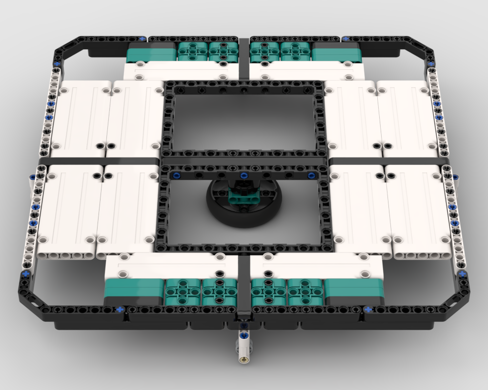
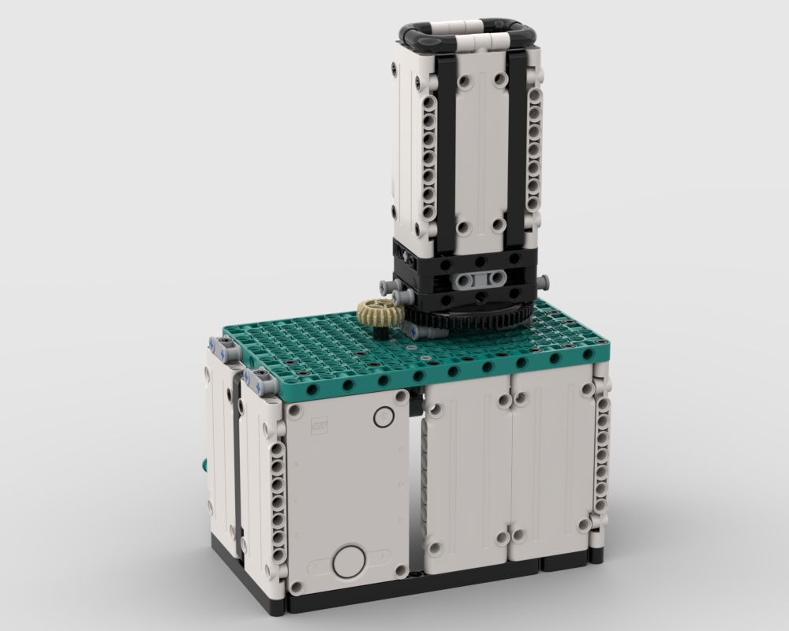
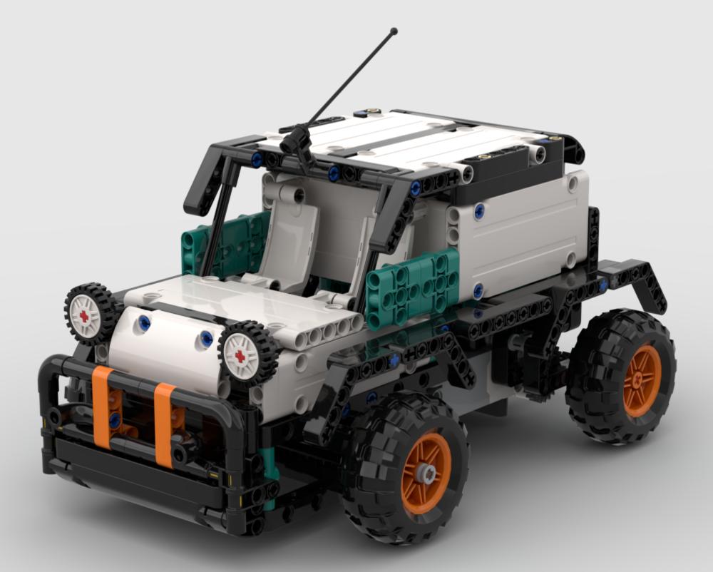
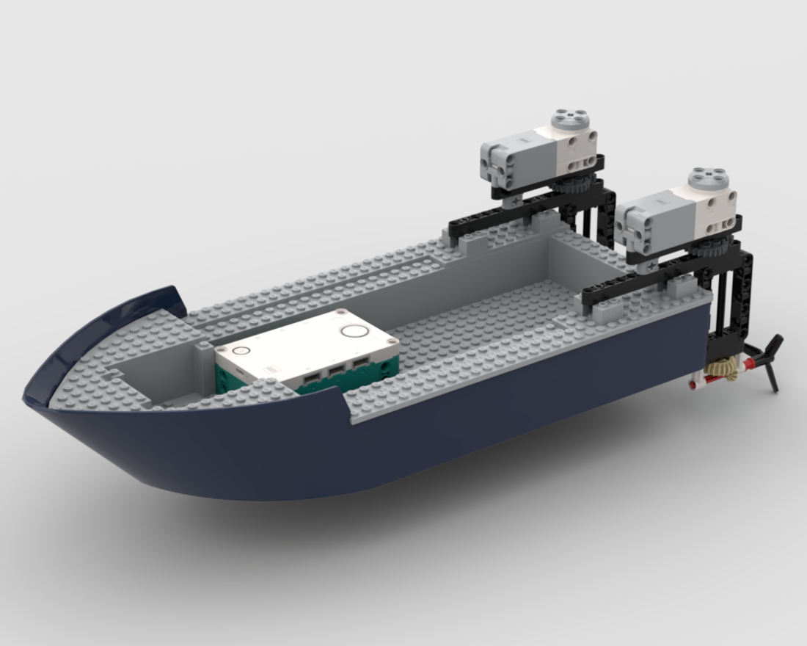
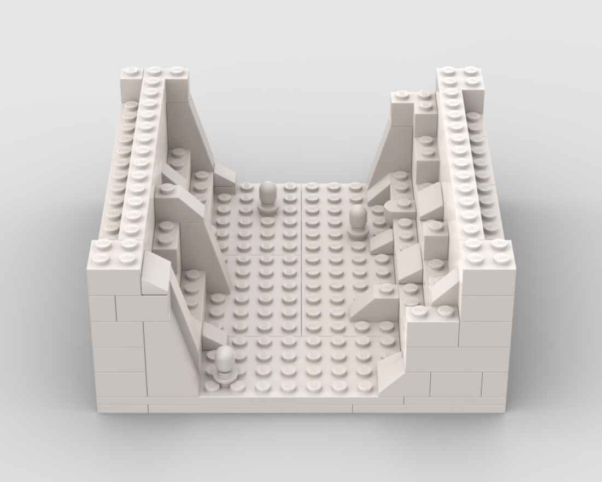
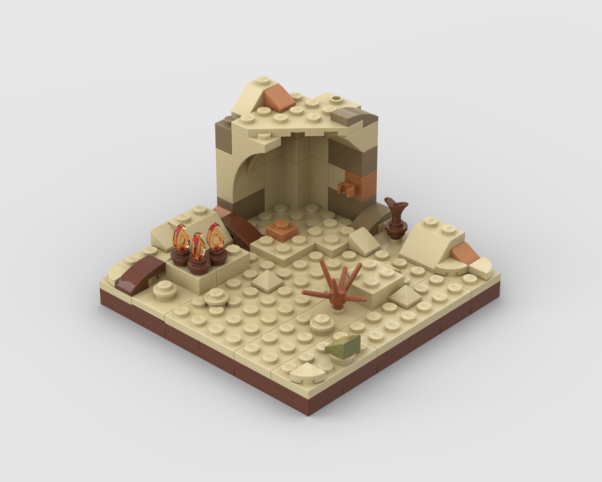

Portfolio
Évidemment, je me devais de référencer ce site ! Pas besoin d'en dire plus, la section À propos est là pour ça !
Vous êtes déjà dessus !
Salut, moi c'est Binou30 ! Depuis un certain temps maintenant, je réalise plein de projets différents, que ce soit en programmation ou avec des LEGO. Je me suis donc dit qu'il serait intéressant de rassembler toutes ces créations dans ce portfolio !
Vous trouverez 4 sections dans celui-ci : À propos où vous vous trouvez, Code où vous aurez accès à mes projets de programmation : des sites Internet, des jeux vidéo et autres, LEGO où vous pourrez voir toutes les constructions que j'ai réalisées jusque-là et Liens dans laquelle vous aurez accès à mes différents profils sur Internet (YouTube, GitHub, etc.). Amusez-vous bien !
C'est ici que je référence mes projets de code que j'ai réalisés. La première partie concerne les projets de site Internet qui sont actuellement en ligne, la deuxième concerne des jeux vidéo, soit publiés directement, soit en cours de développement, et la dernière rassemble les autres projets de code que j'ai réalisés ! Pour information, dans cette section uniquement, les projets sont triés du plus réussi au moins réussi selon moi.
Évidemment, je me devais de référencer ce site ! Pas besoin d'en dire plus, la section À propos est là pour ça !
Vous êtes déjà dessus !
C'est le tout premier site Internet que j'ai créé ! La version actuelle est la version numéro 2 où j'ai corrigé de nombreux bugs et refait la DA du site. Dans celui-ci, vous pouvez publier vos projets et fichiers pour les autres utilisateurs, échanger dans un forum et accéder aux publications des autres !
Lien associé ↗
J'ai créé et publié mon jeu Savoie Click (voir plus bas) sur Scratch. Le problème est que je devais à chaque fois ouvrir le site, rechercher mon jeu, etc. Galère. J'ai donc créé cette petite page web pour pouvoir y accéder plus facilement !
Lien associé ↗
Pas grand-chose à dire sur ce site. C'est simplement un générateur automatique de labyrinthes quand on s'ennuie... Ça peut quand même être utile !
Lien associé ↗
J'aime beaucoup coder avec GDevelop car c'est hyper intuitif et on peut avancer beaucoup plus rapidement qu'en codant ligne par ligne. Cependant, avec cette méthode, les idées vont très vite et on se retrouve à vouloir faire des jeux super longs, détaillés et ça prend du temps ! Je suis donc en train (c'est très long et je n'ai pas beaucoup de temps) de coder un RPG du Moyen Âge en vue du dessus où l'on joue Yvan, un jeune fermier qui doit délivrer sa région d'un méchant seigneur, classique...
Pas de lien pour l'instant puisqu'il n'est pas publié...
C'est mon tout premier jeu vidéo que j'ai publié ! Je l'ai codé au collège sur Scratch et depuis, il est toujours d'actualité ! Dans ce jeu, vous devez cliquer sur un fromage pour obtenir du fromage et vous avez accès à une boutique pour acheter de la nourriture savoyarde qui vous fera gagner encore plus de fromages. Génial ! J'ai même créé une page web pour pouvoir y accéder plus rapidement (voir plus haut).
Lien associé ↗
C'est mon tout premier projet codé en Python, et lui, je l'ai fait entièrement à la main ! Le but du projet est de recréer une sorte de mini-robot qui peut résoudre le théorème de Pythagore et les fonctions trigonométriques. Il y a deux versions : une qui s'exécute directement dans le terminal et l'autre via une interface Tkinter. Désolé si la photo ne donne pas tellement envie, allez voir par vous-même en cliquant sur le lien ci-dessous !
Lien associé ↗C'est ma section préférée car ce sont mes projets dont je suis le plus fier ! Ici, vous trouverez toutes mes créations LEGO que j'ai modélisées et publiées sur Rebrickable (lien plus bas). Ces créations se nomment des MOCs (My Own Creations), j'espère qu'elles vous plairont ! Elles sont rangées de la plus récente à la moins récente, (pour l'info)...

J'ai construit ce présentoir récemment pour pouvoir présenter un gros set dans une vidéo YouTube (visible depuis ma chaîne dont le lien est en bas) et je l'ai trouvé tellement utile et fonctionnel que je l'ai modélisé pour en garder une trace ! Il est très pratique pour mettre en valeur un objet qui vous tient à cœur et permettre de le tourner pour en révéler toutes les faces !
Lien associé ↗
C'est une de mes constructions les plus originales : un mini-jeu Fort Boyard ! Il reprend celui de la cartouche que les Maîtres du Temps nous font faire et qui est assez simple à reproduire en LEGO : deux moteurs, une bielle, un canon et le tout est joué !
Lien associé ↗
Je pense sincèrement que c'est la MOC dont je suis le plus fier car j'ai réussi à reproduire une jeep entièrement motorisée et fonctionnelle juste à partir de quelques photos sans m'inspirer d'autres constructions ! Avec l'application LEGO Mindstorms Robot Inventor, on peut la diriger pour explorer dehors !...
Lien associé ↗
Ce bateau n'a beau pas être très très joli, il est bien fonctionnel et c'est le principal ! La portée Bluetooth du hub LEGO Mindstorms est plutôt correcte, ce qui fait qu'on peut lui faire faire des petits parcours sympas !
Lien associé ↗
On revient dans les "vraies" briques LEGO avec cette petite base montagneuse où l'on peut mettre un petit AT-AT et des minifigurines pour faire un diorama. J'aime bien les textures de neige que j'ai réussi à faire et la construction n'est pas trop répétitive, c'est génial !
Lien associé ↗
Voilà ma toute première MOC, une petite scène du désert. J'ai utilisé, entre autres, la petite cabane d'un Jawa d'un set avec le speeder de Luke sur Tatooine. On peut rajouter, si on veut, des minifigurines pour compléter le diorama et rendre la scène encore plus vivante !
Lien associé ↗Vous voici dans la dernière section de ce portfolio où vous aurez accès à mes différents profils sur Internet, n'hésitez pas à aller les voir !